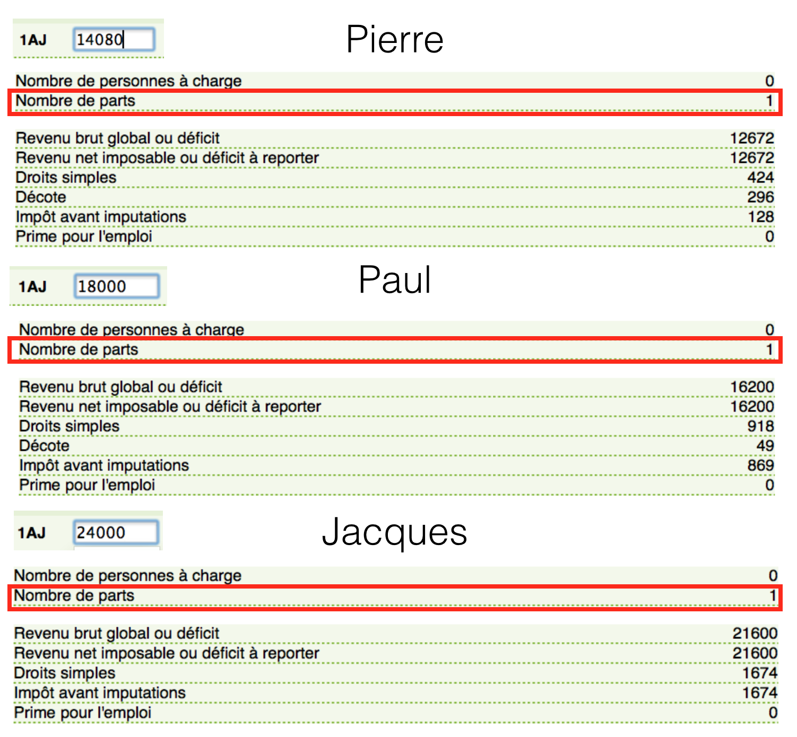
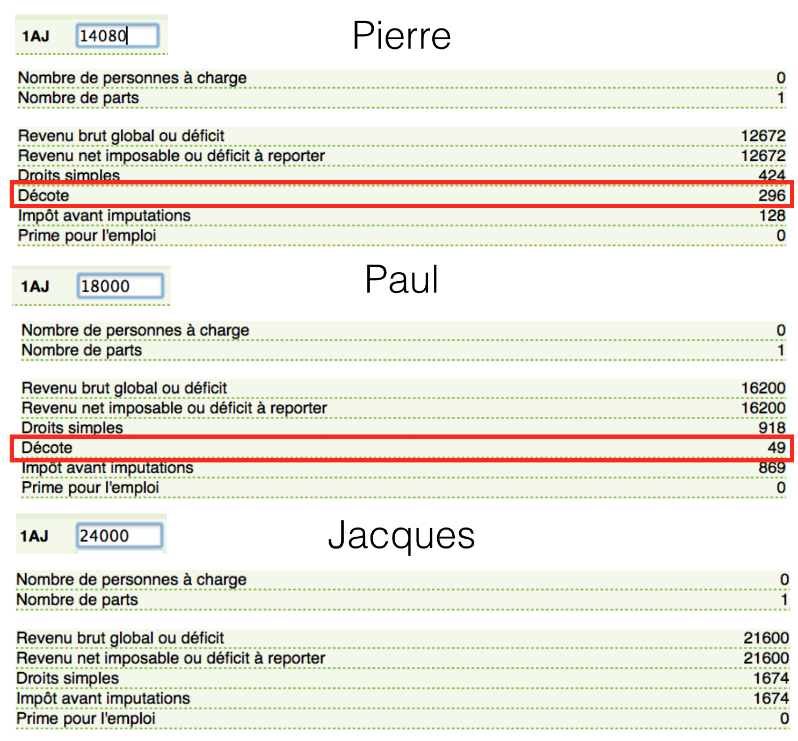

Si comme moi vous n’avez rien compris la première fois que vous avez du déclarer vos revenus aux impôts, cet article est fait pour vous !
L’objet de cet article est :
- de comprendre et résumer le fonctionnement de l’impôt sur le revenu
- d’expliquer les spécificités de calcul liées à l’invalidité
- de comparer les impôts pour une personne valide et handicapée
Si vous √™tes courageux vous pouvez bien s√ªr vous r√©f√©rer au code des imp√¥ts, mais cela risque de vous prendre un certain temps üòÄ Sinon vous pouvez suivre mes modestes explications (qui s‚Äôappuient sur le site impotsurlerevenu.org).
Comprendre le fonctionnement de l’impôt sur le revenu
Le site des impôts met à disposition un simulateur bien pratique pour estimer l’impôt sur les revenus 2013 à payer en 2014, sur lequel on se basera pour vérifier nos calculs :
–> Simulateur de l’impôt sur le revenu <–
Dans toute la suite on supposera remplis les champs suivants de la déclaration :
- Personne célibataire (C)
- Vivant en métropole
- Année de naissance
- Traitements, salaires : “indiquez vos seuls revenus d’activité” (1AJ)
Autrement dit on suppose dans un premier temps que la personne n’a pas d’autres types de revenus (foncier, etc) que les revenus salariaux. Ce qui, nous allons voir, n’est déjà pas un calcul si simple…
Exemple : En 2013, Pierre gagnait le smic, Paul gagnait 1500 € et Jacques gagnait 2000 € net imposable par mois. Quel impôt sur le revenu devront-ils payer en 2014 ?
Décrivons étape par étape le calcul des impôt :
Etape n°1 : Calcul du revenu brut (RB)
Les revenus perçus peuvent provenir de plusieurs catégories de revenus. Ces revenus sont dits “catégoriels”.
Pour calculer le revenu brut, vous devrez faire l’addition sur l’année des :
- Salaires perçus (salaire net imposable)
- Revenus fonciers (immobilier locatif. Vous pourrez généralement déduire les charges liées au bien)
- Pensions perçues
- Bénéfices non commerciaux
- Bénéfices agricoles
- Bénéfices commerciaux
- Plus-values immobilières, sur valeurs mobilières, sur biens meubles, professionnelles
- Rémunérations des dirigeants de société
Dans notre cas puisque l’on considère uniquement les revenus issus des salaires perçus, le revenu brut se réduit aux salaires imposables. Le salaire imposable est mentionné sur votre bulletin de paie (cf. Comprendre son bulletin de paie).
Que faut-il déclarer aux impôts dans la case 1AJ ?
Exemple : Pierre gagne le smic, en net imposable cela représente 1173,38 € par mois d’après mon précédent article Comprendre son bulletin de paie
Revenus que Pierre doit déclarer = 12*1173,38 = 14080 €
Revenus que Paul doit déclarer = 12*1500 = 18000 €
Revenus que Jacques doit déclarer = 12*2000 = 24000 €
Remarque : on ignore la virgule en tronquant le résultat.
Est-ce le montant considéré par les impôts ?
Non. Les salaires imposables du point de vue des impôts est le salaire imposable de votre fiche de paie auquel est appliqué un abattement de 10% en raison des frais professionnels1. Cet abattement fiscal est au minimum de 421 euros et au maximum de 12 000 €.
1 Article 182 A bis, alinéa 2 - lien
Remarque : si vous estimez vos frais professionnels (déplacements, etc) plus élevés que la valeur de ces 10% il vous est possible à la place de déclarer vos frais réels.
Dans nos exemples on applique les 10% d’abattement, ce qui revient à multiplier par 0.9
revenu brut = 0.9 x 12 x salaire net imposable
Exemple : Pierre gagne le smic, en net imposable cela représente 1173,38 € par mois d’après mon précédent article Comprendre son bulletin de paie
revenu brut de Pierre = 0.9 x 12 x 1173,38 = 0.9 x 14080 = 12672 €
Remarque : on ignore la virgule en tronquant le résultat.
De même on obtient :
revenu brut de Paul = 0.9 x 12 x 1500 = 16200 €
revenu brut de Jacques = 0.9 x 12 x 2000 = 21600 €
Vérification avec le simulateur.
Remarque : Du Revenu Brut, on déduit les éventuels déficits globaux des années précédentes, pour obtenir le Revenu Brut Global (RBG). On considère ces éventuels déficits nuls dans nos exemples.
Etape n°2 : Calcul du revenu net global imposable (RNGI)
Du Revenu Brut (Global), on soustrait les charges déductibles pour obtenir le Revenu Net Global (RNG). Ces charges peuvent être les suivantes :
- Déficit foncier (immobilier locatif)
- Pension alimentaire aux ascendants (uniquement si celle-ci est considérée comme vitale pour le bénéficiaire)
- Pension alimentaire aux descendants majeurs dans la limite de 5 698 € par enfant.
- Perte de capital lié à une création d’entreprise
Enfin pour obtenir le Revenu Net Global Imposable on déduit certains abattements (pour enfants à charge ayant fondé un foyer distinct, pour personnes âgées et invalides).
Exemple : Pour Pierre, Paul, Jacques aucune charge de ce type n’a lieu, donc :
revenu net global imposable de Pierre = 12672 €
revenu net global imposable de Paul = 16200 €
revenu net global imposable de Jacques = 21600 €
Vérification avec le simulateur.
Etape n°3 : Calcul du nombre de parts fiscales
Le calcul du nombre de parts fiscales s’effectue en 2 étapes.
Parts fiscales liées à la situation familiale
1 part fiscale si vous êtes :
- Célibataire
- Concubin
- Divorcé
- Veuf (si pas d’enfant à charge)
2 parts fiscales si vous êtes :
- Marié
- Pacsé
- Veuf avec enfant(s) à charge
Parts fiscales liées au nombre d’enfants
Les parts fiscales liées aux enfants s’ajoutent à la ou les part(s) de la situation familiale.
Fonctionnement : 0,5 part par enfant pour les 2 premiers puis 1 part par enfant à compter du 3ème.
En résumé :
- 1 enfant : 0.5 part
- 2 enfants : 1 part
- 3 enfants : 2 parts
- 4 enfants : 3 parts
- etc.
Si par exemple vous êtes marié avec 2 enfants : 2 parts (situation familiale) + 1 part (2 enfants : 0,5 + 0,5) = 3 parts fiscales
Majoration du nombre de parts fiscales
Certaines situations donnent droit à une demi part supplémentaire (+0,5) :
- Parent isolé : vous vivez et élevez seul votre enfant au 1er janvier de l’année d’imposition ;
- Invalidité : vous êtes invalide à plus de 80 % et avez la carte d’invalidité ;
- Ancien combattant ;
- Veuve de guerre ;
- Vous vivez seul au 1er janvier et avez élevé seul un enfant pendant au moins 5 ans.
Attention : les demi parts ne se cumulent pas entre elles sauf en présence de plusieurs invalides dans le foyer.
Par exemple, si vous êtes invalide et ancien combattent à la fois, vous n’obtenez qu’une seule demi part supplémentaire (et non 1 part).
Exemple : Pour nos protagonistes Pierre, Paul, Jacques qui sont célibataires, une seule part est comptée.
Vérification avec le simulateur.

Etape n°4 : Calcul du quotient familial
Il suffit simplement de diviser le revenu net global imposable par le nombre de parts :
Quotient familial = Revenu net global imposable / nombre de parts
Exemple : Dans notre cas puisque Pierre, Paul, Jacques n’ont qu’une seule part on a
Quotient familial de Pierre = 12672 €
Quotient familial de Paul = 16200 €
Quotient familial de Jacques = 21600 €
Etape n°5 : Connaître sa Tranche Marginale d’Imposition (TMI)
C’est avec le quotient familial que vous pourrez connaître votre Tranche Marginale d’imposition. Si par exemple votre quotient familial est de 10 000 € alors vous aurez un TMI de 5.5 %. Tous vos revenus (ou plutôt quotient familial qui est le revenu réduit par les parts fiscales) seront imposées à 5.5%. Pour 20 000 euros de quotient familial, une partie sera imposée à 5.5 % et l’autre excédant 11 991 € à 14 %.
Exemple : Tous les quotients familiaux calculés se situent dans la tranche [11991,26631]
Quotient familial de Pierre = 12672 € –> TMI = 14%
Quotient familial de Paul = 16200 € –> TMI = 14%
Quotient familial de Jacques = 21600 € –> TMI = 14%
Etape n°6 : Calcul de l’impôt brut
Les taux liés aux tranches marginales d’imposition (TMI) servent à découper votre quotient familial (revenu réduit par le nombre de part(s) fiscales) en différentes tranches qui seront chacune imposée à un taux différent (barème de l’impôt). Pour expliquer simplement, on découpe votre revenu en “morceaux” et chacun d’eux est imposé avec un taux différent.
Exemple : Calcul de l’impôt brut de Pierre
- Pour la tranche 1 : de 0 à 6 011 € donc 6 011 * 0 = 0
- Pour la tranche 2 : de 6 011 à 11 991 € soit 5 980 € (11 991-6 011) x 0.055 = 329 €
- Pour la tranche 3 : de 11 991 à 12 672 € (pas 26 631 € car quotient familial égal à 18 000 €) soit (12 672-11 991) x 0.14 = 95 €
- Pour la tranche 4 : le quotient familial de l’exemple ne va pas jusqu’à cette 4ème tranche (12 672 € < 26 631).
Une fois les tranches calculées, il suffit de les additionner et de les multiplier par le nombre de parts soit :
impôt brut de Pierre = (0 + 329 + 95)*1 = 424 €
De même pour les deux autres, Paul dans la tranche 3 = (16200-11991)0.14 = 589 € et Jacques dans la tranche 3 = (21600-11991)0.14 = 1345 €, donc :
impôt brut de Paul = (0 + 329 + 589)*1 = 918 €
impôt brut de Jacques = (0 + 329 + 1345)*1 = 1674 €
Vérification avec le simulateur.
Etape n°7 : Calcul de l’impôt net
Si l’impôt brut obtenu est inférieur à 1016 €, alors on applique une décote (réduction d’impôt) qui se calcule de la manière suivante :
decote = (1016 - impôt brut)/2
Exemple : On calcule les décotes de Pierre, Paul et Jacques
decote de Pierre = (1016 - 424)/2 = 296 €
decote de Paul = (1016 - 918)/2 = 49 €
Pas de décote pour Jacques car impôt brut = 1647 € > 1016 €
Vérification par le simulateur.

Finalement l’impôt net est donné par :
impôt net = impôt brut - décote
Exemple : Calcul de l’impôt net de Pierre, Paul et Jacques.
impôt net de Pierre = 424 - 296 = 128 €
impôt net de Paul = 918 - 49 = 869 €
impôt net de Jacques = 1674 €
Vérification par le simulateur.
Simulations
Courbe d’imposition pour une personne célibataire valide
Ci-dessous on représente la “fonction d’imposition”, c’est-à-dire l’impôt sur le revenu à payer (ramené sur un mois) en fonction du salaire mensuel net imposable perçu.
On constate les choses suivantes :
- Jusqu’à un salaire mensuel net imposable < 1116 € –> pas d’impôt à payer
- De 0 € à 556 € –> TMI à 0%
- De 556 € à 1110 € –> TMI à 5,5%
- De 1110 € à 2465 € –> TMI à 14%
- De 2465 € à 6610 € –> TMI à 30%
- A partir de 1564 € –> décote nulle
Remarque : Attention le TMI ne signifie pas qu’on impose les revenus à ce taux ! Il définit juste la dernière tranche d’imposition des revenus découpés en morceaux (voir Etape n°6)
Spécificités de calcul liées à l’invalidité, quels effets sur l’impôt à payer ?
On suppose désormais remplis les champs suivants de la déclaration :
- Personne célibataire (C)
- Vivant en métropole
- Année de naissance
- Traitements, salaires : “indiquez vos seuls revenus d’activité” (1AJ)
- Titulaire d’une carte d’invalidité d’au moins 80% (P)
Nos chers protagonistes Pierre, Paul et Jacques sont maintenant considérés comme invalide à 80%, et ont donc cochés la case (P).
Qu’est-ce qui change en ayant coché la case (P) ?
- Premièrement un abattement spécial invalidité vient s’appliquer sur le Revenu Net Global pour donner le Revenu Net Global Imposable dont on parlait plus haut à l’étape n°2 :
Revenu Net Global Imposable = Revenu Net Global - abattement spécial
Quel est cet abattement spécial ?
D’après l’article 157 bis du code des impôts2, si le Revenu Net Global est inférieur à 14 630 € alors on applique un abattement de 2332 €, et s’il est compris entre 14 630 € et 23 580 € on applique un abattement de 1166 €.
2 Article 157 bis du code des impôts - lien
Exemple : A l’étape n°2 on rappelle que le Revenu Net Global de Pierre, Paul, Jacques est respectivement 12672 €, 16200€ et 21600€. Pierre a un Revenu Net Global inférieur à 14630 €, il bénéficiera donc d’un abattement spécial du à son invalidité de 2332 €. Tandis que ses compères dont le Revenu Net Global se situe entre 14630 € et 23580€ bénéficieront d’un abattement de 1166 €.
revenu net global de Pierre = 12672 - 2332 = 10 340 €
revenu net global imposable de Paul = 16200 - 1166 = 15 034 €
revenu net global imposable de Jacques = 21600 - 1166 = 20 434 €
3 Article 195 du code général des impôts - lien
Exemple : Recalcul du quotient familial avec un nombre de parts à 1,5
Quotient familial de Pierre = 10340/1,5 = 6893 €
Quotient familial de Paul = 15034/1,5 = 10 022 €
Quotient familial de Jacques = 20434/1,5 = 13 622 €

Cela a pour effet d’abaisser le quotient familial, et on remarque que celui de Pierre et de Paul a changé de TMI en passant de 14% à 5,5% ! Ces trois diminutions de quotient familial réduit un peu l’impôt brut, voyons un peu la somme des tranches :
Pierre : (6011-0)0%+(6893-6011)5,5% = 48 €
Paul : (6011-0)0%+(10022-6011)5,5% = 220 €
Jacques : (6011-0)0%+(11991-6011)5,5%+(13622-11991)*14% = 557 €
Ainsi en multipliant par le nombre de part on obtient le nouvel impôt brut :
impôt brut de Pierre = 48*1,5 = 73 €
impôt brut de Paul = 220*1,5 = 331 €
impôt brut de Jacques = 557*1,5 = 836 €
On recalcule également les décotes puisque ces trois impôts bruts sont maintenant tous sous le seuil des 1106 € :
décote de Pierre = (1016-73)/2 = 471 €
décote de Paul = (1016-331)/2 = 342 €
décote de Jacques = (1016-836)/2 = 90 €
On remarque que les décotes de Pierre et Paul sont supérieures à l’impôt brut, ce qui signifie qu’ils ne payeront aucun impôt.
impôt net de Pierre = 0 €
impôt net de Paul = 0 €
impôt net de Jacques = 836 - 90 = 746 €
- Enfin troisièmement, une chose importante dont on n’a pas encore parlé, est le plafonnement du quotient familial4.
4 Plafonnement des effets du quotient familial sur le site impotgouv - lien
En effet, les deux points précédents : existence d’un abattement spécial + demi part supplémentaire pour une personne invalide, procurent une baisse du quotient familial et donc de l’impôt brut par rapport au calcul effectué sur les mêmes revenus d’une personne valide. Toutefois afin de limiter les effets de ces avantages, la différence d’impôt entre ces deux modes de calcul est plafonné à 1500 € :
impôt brut d’une personne valide - impôt brut d’une personne invalide < 1500 €
Dit autrement si on désigne pour des revenus identiques les quantités suivantes :
A = impôt brut calculé dans le cas d’invalidité
B = impôt brut calculé dans le cas valide - 1500 €
Alors la condition de plafonnement se réécrit : A < B
Exemple : Vérification du plafonnement pour Pierre, Paul, Jacques
Pierre : impôt brut invalide = 73 €, impôt brut valide = 424 € –> 424-73 < 1500 [OK]
Paul : impôt brut invalide = 331 €, impôt brut valide = 918 € –> 918-331 < 1500 [OK]
Jacques : impôt brut invalide = 836 €, impôt brut valide= 1674 € –> 1674-836<1500 [OK]
Si la condition de plafonnement est vérifiée, on conserve l’avantage du calcul dans le cas d’invalidité :
Si A <= B alors impôt brut retenu = A
Si au contraire la condition n’est pas vérifiée, on retient l’impôt brut dans le cas valide moins le plafond de 1500 € :
Si A > B alors impôt brut retenu = B
Attention : ceci est valable plus généralement pour tout calcul avantageux lié à des demi parts supplémentaires, et le plafond correspond à 1500 € par demi parts supplémentaires. Cependant dans le cas de l’invalidité, ce plafond est réévalué à 1497 € de plus ! C’est ce qu’on appelle une réduction d’impôt complémentaire.5 Plus précisément :
5 Article 197 du code général des impôts - lien
Si B-A > 1497 alors impôt brut retenu = B - 1497 = impôt brut valide - 2997 €
Courbe d’imposition d’une personne célibataire invalide
On peut tracer la courbe pour des salaires plus importants pour la visualiser dans son ensemble :
Comparaison des impôts payés par une personne valide et invalide
Si on fusionne les deux courbes d’impositions sur un même graphique on obtient :
Enfin si au lieu de représenter l’impôt en euros on l’exprime en pourcentage du salaire net imposable perçu, alors on obtient les courbes ci-après :
Annexes : codes Matlab implémentant la fonction d’imposition et les graphiques
Fonction imposition.m
salaire_net_imposable : montant du salaire net imposable sur un mois
invalide : 0 si valide, 1 si invalide (par défaut)
Sortie : Renvoie l’impôt mensuel.
Exemple : Pour le salaire de Jacques invalide qui gagne 2000 € net imposable par mois
function mon_impot = imposition(salaire_net_imposable,invalide)
global plafondC;
if nargin < 2
invalide = 1;
end
% Annualisation du salaire net imposable
revenus_declares = 12*salaire_net_imposable;
% Chiffres 2014
nombre_parts = 1 + 0.5*invalide; % une demi part supplémentaire si invalide
abattement_fiscal_min = 421; % abattement frais professionnel minimal
abattement_fiscal_max = 12000; % et maximal, sinon -10 %
revenu_special_min = 14630; % fourchettes pour lesquelles est appliqué
revenu_special_max = 23580; % un abattement spécial d'invalidité
if invalide
abattement_special_max = 2332; % abattement spécial pour faible salaire
abattement_special_min = 1166; % abattement spécial pour salaire moyen
else
abattement_special_min = 0;
abattement_special_max = 0;
end
tranche1 = 6011; taux1 = 0; % Les différentes tranches d'imposition
tranche2 = 11991; taux2 = 0.055; % et leur taux respectif (TMI)
tranche3 = 26631; taux3 = 0.14;
tranche4 = 71397; taux4 = 0.3;
tranche5 = 151200;taux5 = 0.41;
impot_min = 1016;
% Abattement fiscal de 10% de frais professionnels
abattement_fiscal = min(max(abattement_fiscal_min,0.1*revenus_declares),abattement_fiscal_max);
revenus_net_global = max(revenus_declares-abattement_fiscal,0);
% Détermination de l'abattement spécial lié à l'invalidité
if (revenus_net_global <= revenu_special_min) && (invalide)
abattement_special = abattement_special_max;
elseif (revenus_net_global > revenu_special_min) && (revenus_net_global < revenu_special_max) && (invalide)
abattement_special = abattement_special_min;
else
abattement_special = 0;
end
% Application de l'abattement spécial lié à l'invalidité
revenus_net_imposable = max(revenus_net_global-abattement_special,0);
% Calcul du quotient familial
quotient_familial = max(revenus_net_imposable/nombre_parts,0.1);
% On stocke les tranches d'imposition et leur taux dans des tableaux
tranches = zeros(5,1); taux = zeros(4,1);
tranches(1) = 0;
tranches(2) = tranche1; taux(1) = taux1;
tranches(3) = tranche2; taux(2) = taux2;
tranches(4) = tranche3; taux(3) = taux3;
tranches(5) = tranche4; taux(4) = taux4;
tranches(6) = tranche5; taux(5) = taux5;
% Détermination de la tranche marginal d'imposition (TMI)
i0 = 1;
while tranches(i0) < quotient_familial
i0 = i0+1;
end
i0 = i0-1;
% Calcul de l'impôt brut
sum = 0;
for i=2:i0
sum = sum + (tranches(i)-tranches(i-1))*taux(i-1);
end
impot_brut = sum + (quotient_familial-tranches(i0))*taux(i0);
impot_brut = impot_brut*nombre_parts;
reduction = 0;
% Plafonnement du quotient familial
if invalide
temp = 12*imposition(salaire_net_imposable,0); % comparaison avec
A = impot_brut; % QF d'une seule part
B = temp-1500;
if A < B
% disp('plafonnement bas 1500')
impot_brut = B;
reduction = B-A;
if reduction > 1497
persistent compteur;
if isempty(compteur)
%disp(['Plafonnement haut 1500+1497 : ',num2str(salaire_net_imposable)]);
plafondC = salaire_net_imposable;
end
compteur = 1;
reduction = 1497;
end
end
end
% Application de la decote
decote = 0;
if impot_brut < impot_min
decote = (impot_min-impot_brut)/2;
end
impot_net = max(impot_brut-decote,0);
% Réduction d'impot complémentaire
impot_net = max(impot_net-reduction,0);
% Sortie impôt mensualisé
mon_impot = impot_net/12;
if 0 % à mettre à 1 si on utilise la fonction imposition seule
disp(['Nombre de parts : ',num2str(nombre_parts)]);
disp(['Salaire net mensuel imposable : ',num2str(salaire_net_imposable)]);
disp(['Revenus net annuel global : ',num2str(12*salaire_net_imposable)]);
disp(['Revenu net imposable : ',num2str(max(revenus_net_global-abattement_fiscal,0))]);
disp(['Abattements spéciaux : ',num2str(abattement_special)]);
disp(['Revenu net imposable après abattements spéciaux : ',num2str(revenus_net_imposable)]);
disp(['Droits simples : ',num2str(impot)]);
disp(['Decote : ',num2str(decote)]);
if reduction > 0
disp(['Reduction impot complémentaire : ',num2str(reduction)]);
end
disp(['Impot sur le revenu net : ',num2str(impot_net)]);
end
endScript calcul_impot.m
Sortie : Affiche la courbe d’imposition d’une personne valide ou invalide
global plafondC;
%-----------------------------------------------------%
% Script Matlab permettant de visualiser la fonction %
% d'imposition sur le revenu pour une personne valide %
% ou invalide. Il utilise la fonction "imposition.m" %
%-----------------------------------------------------%
%%% Chiffres 2014 %%%
invalide = 0; % mettre à 1 si invalide
nombre_parts = 1 + 0.5*invalide; % une demi part supplémentaire si invalide
abattement_fiscal_min = 421; % abattement frais professionnel minimal
abattement_fiscal_max = 12000; % et maximal, sinon -10 %
revenu_special_min = 14630; % fourchettes pour lesquelles est appliqué
revenu_special_max = 23580; % un abattement spécial d'invalidité
if invalide
abattement_special_max = 2332; % abattement spécial pour faible salaire
abattement_special_min = 1166; % abattement spécial pour salaire moyen
else
abattement_special_min = 0;
abattement_special_max = 0;
end
tranche1 = 6011; taux1 = 0; % Les différentes tranches d'imposition
tranche2 = 11991; taux2 = 0.055; % et leur taux respectif (TMI)
tranche3 = 26631; taux3 = 0.14;
tranche4 = 71397; taux4 = 0.3;
impot_min = 1016;
%%% Construction de la fonction d'imposition %%%
salaire_max = 7000; %(nombre_parts*tranche4)/(12*0.9);
abs_salaires = 0:0.1:salaire_max; % en abscisse les salaires
ord_impots = zeros(1,length(abs_salaires)); % en ordonnée les impôts
for i=1:length(ord_impots)
ord_impots(i) = imposition(abs_salaires(i),invalide);
end
%%% Calcul des points critiques %%%
if invalide
QF_impot_nul = impot_min/(3*nombre_parts*taux2)+tranche1;
else
QF_impot_nul = (impot_min/(3*nombre_parts)+tranche2*(taux3-taux2)+...
tranche1*taux2)/taux3;
end
salaire_impot_nul=(nombre_parts*QF_impot_nul+abattement_special_min)/(12*0.9)
salaire_tranche1fin=(nombre_parts*tranche1+abattement_special_max)/(12*0.9)
salaire_tranche2fin=(nombre_parts*tranche2+abattement_special_min)/(12*0.9)
salaire_tranche3fin=(nombre_parts*tranche3)/(12*0.9)
salaire_tranche4fin=(nombre_parts*tranche4)/(12*0.9)
QF_decote_nulle = (impot_min/nombre_parts-(tranche2-tranche1)*taux2+...
tranche2*taux3)/taux3;
salaire_decote_nulle = (nombre_parts*QF_decote_nulle+...
abattement_special_min)/(12*0.9)
%%% Représentation graphique de la variation des impôts sur le revenu %%%
fig1 = figure('Color',[1 1 1]);
if invalide
plot(abs_salaires,ord_impots,'Color','r','LineWidth',2);
else
plot(abs_salaires,ord_impots,'Color','b','LineWidth',2);
end
hold on;
plot([salaire_impot_nul salaire_impot_nul],[0 ord_impots(end)],'--m');
plot([salaire_tranche1fin salaire_tranche1fin],[0 ord_impots(end)],'--g');
plot([salaire_tranche2fin salaire_tranche2fin],[0 ord_impots(end)],'--g');
plot([salaire_tranche3fin salaire_tranche3fin],[0 ord_impots(end)],'--g');
plot([salaire_tranche4fin salaire_tranche4fin],[0 ord_impots(end)],'--g');
plot([salaire_decote_nulle salaire_decote_nulle],[0 ord_impots(end)],'--b');
if invalide
plot([revenu_special_min/(12*0.9) revenu_special_min/(12*0.9)],[0 ord_impots(end)],'--r');
plot([revenu_special_max/(12*0.9) revenu_special_max/(12*0.9)],[0 ord_impots(end)],'--r');
plot([plafondC plafondC],[0 ord_impots(end)],'--r');
end
% % Plot pour Pierre
% plot([1173.38 1173.38],[0 imposition(1173.38,invalide)],'r');
% plot([0 1173.38],[imposition(1173.38,invalide) imposition(1173.38,invalide)],'r');
%
% % Plot pour Paul
% plot([1500 1500],[0 imposition(1500,invalide)],'r');
% plot([0 1500],[imposition(1500,invalide) imposition(1500,invalide)],'r');
%
% % Plot pour Jacques
% plot([2000 2000],[0 imposition(2000,invalide)],'r');
% plot([0 2000],[imposition(2000,invalide) imposition(2000,invalide)],'r');
% Annotations de la figure
xlabel({'salaire mensuel net imposable (en euros)'});
ylabel({'impôt sur le revenu mensuel (en euros)'});
if invalide
title({'VARIATIONS DE L''IMPOT SUR LE REVENU POUR UNE PERSONNE INVALIDE'});
else
title({'VARIATIONS DE L''IMPOT SUR LE REVENU POUR UNE PERSONNE VALIDE'});
% % Create textbox
% annotation(figure1,'textbox',...
% [0.306357142857143 0.15 0.143642857142857 0.0357142857142861],...
% 'String',{'Pierre'},...
% 'FontSize',12,...
% 'FitBoxToText','off',...
% 'LineStyle','none',...
% 'Color',[1 0 0]);
%
% % Create textbox
% annotation(figure1,'textbox',...
% [0.311714285714286 0.283333333333333 0.107928571428572 0.0523809523809531],...
% 'String',{'Paul'},...
% 'FontSize',12,...
% 'FitBoxToText','off',...
% 'LineStyle','none',...
% 'Color',[1 0 0]);
%
% % Create textbox
% annotation(figure1,'textbox',...
% [0.288857142857142 0.444285714285715 0.107928571428572 0.0523809523809531],...
% 'String',{'Jacques'},...
% 'FontSize',12,...
% 'FitBoxToText','off',...
% 'LineStyle','none',...
% 'Color',[1 0 0]);
%
% % Create textbox
% annotation(figure1,'textbox',...
% [0.156714285714285 0.777619047619049 0.107928571428572 0.0523809523809531],...
% 'String',{'TMI 0%'},...
% 'FontSize',12,...
% 'FitBoxToText','off',...
% 'LineStyle','none',...
% 'Color',[0 0.498039215686275 0]);
%
% % Create textbox
% annotation(figure1,'textbox',...
% [0.298142857142856 0.781428571428573 0.116142857142858 0.0523809523809531],...
% 'String',{'TMI 5,5%'},...
% 'FontSize',12,...
% 'FitBoxToText','off',...
% 'LineStyle','none',...
% 'Color',[0 0.498039215686275 0]);
%
% % Create textbox
% annotation(figure1,'textbox',...
% [0.551714285714285 0.779047619047621 0.107928571428572 0.0523809523809531],...
% 'String',{'TMI 14%'},...
% 'FontSize',12,...
% 'FitBoxToText','off',...
% 'LineStyle','none',...
% 'Color',[0 0.498039215686275 0]);
end
% Enregistrement de la courbe d'impôt
save('x_salaires','abs_salaires');
if invalide
save('y_impots_invalide','ord_impots');
else
save('y_impots_valide','ord_impots');
endScript `compare_impots.m```
Sortie : Affiche sur le même graphique les courbes d’imposition valide et invalide
salaires = load('x_salaires.mat');
salaires = salaires.abs_salaires;
impots_invalide = load('y_impots_invalide.mat');
impots_invalide = impots_invalide.ord_impots;
impots_valide = load('y_impots_valide.mat');
impots_valide = impots_valide.ord_impots;
fig1 = figure('Color',[1 1 1]);
plot(salaires,impots_valide,'Color','b','LineWidth',2);
hold on;
plot(salaires,impots_invalide,'Color','r','LineWidth',2);
% Create xlabel
xlabel({'salaire mensuel net imposable (en euros)'});
% Create ylabel
ylabel({'impôt sur le revenu mensuel (en euros)'});
% Create title
title({'COMPARAISON DES IMPOTS POUR UNE PERSONNE INVALIDE OU NON'});
% Create legend
legend1 = legend(' impot personne valide',' impot personne invalide');
set(legend1,...
'Position',[0.525760477692654 0.795202418506835 0.282261153672826 0.0773978518852336]);
fig2 = figure('Color',[1 1 1]);
pourcentage_salaire_valide = 100*impots_valide./(salaires+eps);
pourcentage_salaire_invalide = 100*impots_invalide./(salaires+eps);
plot(salaires,pourcentage_salaire_valide,'Color','b','LineWidth',2);
hold on;
plot(salaires,pourcentage_salaire_invalide,'Color','r','LineWidth',2);
% Create xlabel
xlabel({'salaire mensuel net imposable (en euros)'});
% Create ylabel
ylabel({'impôt sur le revenu mensuel (en % du salaire)'});
% Create title
title({'COMPARAISON DES IMPOTS POUR UNE PERSONNE INVALIDE OU NON'});
% Create legend
legend1 = legend(' impot personne valide',' impot personne invalide');
set(legend1,...
'Position',[0.525760477692654 0.795202418506835 0.282261153672826 0.0773978518852336]);